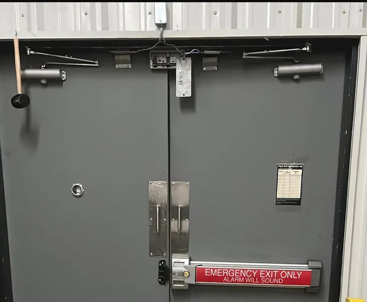

Commercial doors and hardware
Commercial door closer and panic bar repair in Arlington, VA
Get the whole entrance assessed when closing or latching fails.
- Closers and panic bars
- Pivots and locks
- Glass repair support
A closer problem may involve more than the closer
A commercial glass door that slams, drags or stops before latching can disrupt customer access and closing routines. Describe the symptom before buying replacement hardware. Alignment, hinges, pivots, the strike and the closer may need to be checked together.
Capital Glass and Door Services handles commercial door hardware in Arlington, VA, with local pages for Alexandria, VA, Fairfax, VA and Washington, DC. Confirm availability with your address.
Closer, panic bar, pivot or lock?
For a slamming door, send a photo of the closer and describe any visible leak. Allegion technical guidance identifies adjustment, oil loss and internal damage as possible causes. The correct remedy depends on the actual device and condition.
If a panic bar will not release or latch, do not modify it, tie it shut or add a locking workaround. Tell us which entrance is affected and whether an alternative safe route is available. For an immediate threat, contact emergency services.
Photos and approval details for a useful scope
Send the door from both sides, the hardware label if readable without dismantling anything, and the threshold area. Include your address and ZIP code, the business type and urgency. A short description of when the problem occurs is useful: every close, only in wind, or after the door has been propped open.
Cost depends on the failed part, compatible replacements, alignment or frame work and access. Ask whether adjustment is suitable before agreeing to replacement. If the glass is also cracked, mention it so storefront glass repair can be included in the discussion.
Photos from our previous door and hardware work


Call or WhatsApp: which should you use?
Call vs WhatsApp
Active hazard or broken glass right now? Call. Not urgent or want a quote? Send a photo on WhatsApp.
Keep people away from damaged glass. Take photos only from a safe position.
What to send on WhatsApp
- A photo of the damage
- Your address and ZIP code
- Business or home
- How urgent it is
Questions before you call
Does a slamming door always need a new closer?
No. Adjustment or another door issue may be involved. A leaking or internally damaged closer may need replacement; assessment determines the suitable work.
Can you certify that my panic bar meets fire requirements?
Describe the hardware problem and ask what assessment is needed for the opening and its applicable requirements.
Can door hardware and broken glass be discussed together?
Yes. Glass repair, commercial hardware and locksmith services are available service categories. Explain all the damage so the combined scope can be reviewed.
Related reading and service pages
Tell us what happened to your storefront
Call Capital Glass and Door Services at +1 703-244-0559, or send damage photos and your location on WhatsApp. Ask about availability, the repair scope and what happens next.